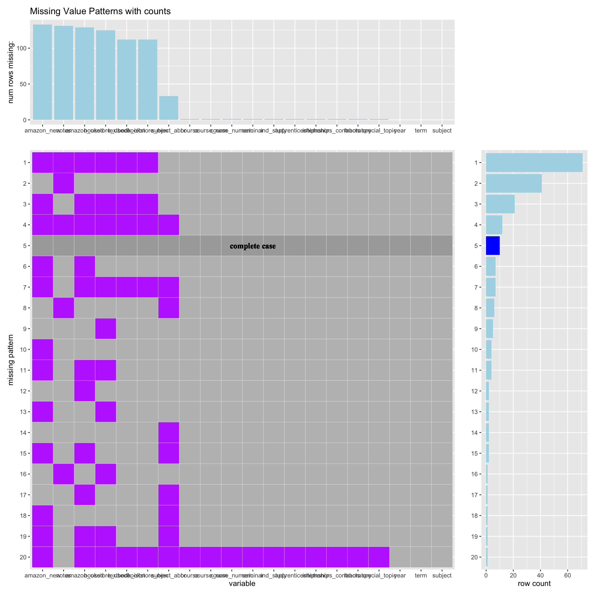

Chapter 3 Data transformation
There are 12 audio features, we categorize those variables into 3 types:
confidence features: acousticness, liveness, speechiness and instrumentalness
perceptual features: energy, loudness, danceability and valence (positiveness)
descriptive features: duration, tempo, key, andmode.
The analysis focus on the relationship among genre vs perceptual features vs popularity, so we will be mainly focusing on the popularity, genre and perceptual features and we cleaned this dataset in following steps:
- Select columns we needed. i.e. track_popularity, playlist_genre, trackenergy, loudness, danceability and valence
- Check duplicates and fix typos
After clearning it, it now has 32833 rows and 14 columns.
## # A tibble: 32,833 × 14
## track_popularity playlist_genre danceability energy key loudness
## <dbl> <chr> <dbl> <dbl> <dbl> <dbl>
## 1 66 pop 0.748 0.916 6 -2.63
## 2 67 pop 0.726 0.815 11 -4.97
## 3 70 pop 0.675 0.931 1 -3.43
## 4 60 pop 0.718 0.93 7 -3.78
## 5 69 pop 0.65 0.833 1 -4.67
## 6 67 pop 0.675 0.919 8 -5.38
## 7 62 pop 0.449 0.856 5 -4.79
## 8 69 pop 0.542 0.903 4 -2.42
## 9 68 pop 0.594 0.935 8 -3.56
## 10 67 pop 0.642 0.818 2 -4.55
## # … with 32,823 more rows, and 8 more variables: mode <dbl>,
## # speechiness <dbl>, acousticness <dbl>, instrumentalness <dbl>,
## # liveness <dbl>, valence <dbl>, tempo <dbl>, duration_ms <dbl>Then, we created a new dataframe summarizing the information of genre for the purpose of analysis in later chapter.
| playlist_genre | genre_total | average_popularity |
|---|---|---|
| edm | 6043 | 34.83353 |
| latin | 5155 | 47.02658 |
| pop | 5507 | 47.74487 |
| r&b | 5431 | 41.22353 |
| rap | 5746 | 43.21545 |
| rock | 4951 | 41.72834 |
